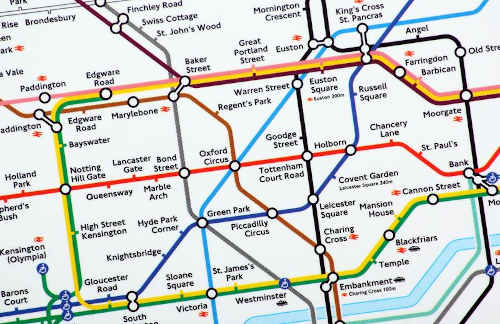

Computational Thinking
Objectives
- Understand and explain the term algorithm
- Define computational thinking and its significance in computer science and various disciplines.
- Identify the four key components of computational thinking and explain each component.
- Provide examples of how decomposition is applied in problem-solving, using analogies such as the sandwich-making process.
- Know how pattern recognition leads to the creation of generalizations.
- Understand how abstraction simplifies complex systems and allows for the creation of models.
- Identify the core principles of algorithmic thinking, including sequential steps, clear instructions, input and output, reusability, and efficiency.
Before we can write the instructions for the computer solve a given problem we need to work out what the steps are that we need to take to solve the problem. We need to know the how. This is not always straightforward and we need to train our brain to think like a computer when designing these steps. The steps are known as th algorithm.
What is an algorithm?
By definition, an algorithm is a step-by-step set of instructions or rules designed to solve a specific problem or carry out a task. They are an essential component of computer science, they define the logic that drives software and systems.
Take the problem of finding the largest value in a list of numbers e.g.
[23, 8, -76, 49, 65, -2]
We can simply scan through this list of values and see that \(65\) is the largest value. But how do we set out the set of instructions for a computer to execute to solve this problem. We need to "think like a computer", or in other words we need to apply "computational thinking".
Input \(\rightarrow\) Process \(\rightarrow\) Output
For all problems there will be some data we need to work with, our input and a result we're looking to obtain, our output.

Inputs: Inputs are the data or values that the algorithm takes as input. For our problem of finding the largest value in a list of values it will be the list itself: [23, 8, -76, 49, 65, -2]. It's the raw material we will work with. It may be the same set of values if we were wanting to sort the values into ascending order, or to find the minimum value, or sum all the values etc..
Outputs: The output is the result produced by the algorithm after processing the input data. It may be a single value as in the case of finding the largest value. Here, we're expecting the output to be \(65\). For a sorting algorithm it will be list of values sorted into ascending order, the minimum value output would be \(-76\), the sum of the values would be \(67\) etc..
Process: The process is the series of steps or operations the algorithm performs on the input to transform it into the desired output. For our finding the maximum value algorithm we might come up with the following set of instructions:
- Start with the first number in the list and consider it as the current maximum.
- Iterate through the remaining numbers in the list.
- For each number, compare it with the current maximum.
- If the current number is greater than the current maximum, update the current maximum to be that number.
- Continue this process until all numbers in the list have been considered.
- The final value of the current maximum is the maximum number in the list.
Remember, this is exactly what you would have done when visually scanning the list for the largest value. Before returning to this algorithm we;ll unpack some of the principles of thinking like a computer, or computational thinking.
What steps would you need to take to:
- find the smallest value, the minimum?
- sum all the values together and output the result?
Computational thinking
Underpinning the whole of the GCSE in computer science is the development and understanding of computational thinking, basically "thinking like a computer". Computational thinking provides a set of skills and analytical abilities that are deemed as being increasingly important in the 21st century. It has application not just for computer science but also across other disciplines including physics, biology, chemistry, economics, sociology, and engineering itself.
Most of the definitions of computational thinking have at their heart algorithmic thinking that is, the ability to describe problems that take some input and transform it in to a desired output. It is to think like a computer. The development of computational thinking is one of the fundamental reasons why we learn how to program at this level though by doing this we also collect other skills and understanding about the computer and digital systems work.
Computational thinking is a problem-solving approach that involves breaking down complex problems into smaller, more manageable parts and systematically analyzing and solving them. It is a fundamental skill in computer science, though as already noted, impacts many other disciplines, and is essential for understanding how to design and implement algorithms, write code, and solve problems in a logical and efficient manner.
In other topics, not just the programming topic here, computational thinking will have been used.
There are four key components of computational thinking:
- Decomposition: Breaking down a complex problem into smaller, more manageable parts or sub-problems.
- Pattern Recognition: Identifying patterns, trends, and similarities within and between problems.
- Abstraction: Focusing on the essential details while ignoring unnecessary information, helping to create generalisations and models.
- Algorithmic Thinking: Developing a step-by-step solution or set of rules to solve a problem.
Decomposition
It's akin to the old joke "How do you eat an elephant?", answer: "One piece at a time". Decomposition takes a problem and breaks it down into smaller, more manageable chunks. Solve each of these smaller chunks and then combine them to provide the whole solution.
By analogy it's like a recipe, for example, making a cheese sandwich. It's not something we stop to think about but when we do we see it can be broken down into a number of key steps, each step being a sub-problem of the overall task e.g.
- Gather ingredients: sliced bread, butter, cheese (other ingredients can be added)
- Gather tools: knife, cheese slicer
- Prepare the work surface: place a clean chopping board or plate on the worktop
- Get the bread ready: remove two slices of bread from the packet
- Spread butter: using a knife spread butter thinly on to the bread
- Slice the cheese: using a cheese slicer get 4 slices of cheese
- Add cheese to the bread: place two slices of cheese on each piece of bread
- Combine the bread slices: place the two slices of bread together, with cheese in the middle
- Cut and serve: cut completed sandwich into two halves
There is a precise order to these instructions. Some tasks must be done before others, some in this example could be swapped around e.g. you might slice the cheese before spreading the butter etc.. But, the key point is the problem has been broken down into a number of discrete steps. Complete each in turn and you will be able to make a cheese sandwich over and over again!
It's a simple example, but the concept of decomposition scales to more complex problems in computer science, where breaking down tasks into smaller steps is a key strategy for solving problems efficiently.
Note
Our algorithm for making a cheese sandwich does not require a programming language. The algorithm and the code we use to implement that algorithm are two quite separate concepts.
In "Finding the Max" we decomposed the high level problem into a set of lower level instructions:
- Start with the first number in the list and consider it as the current maximum.
- Iterate through the remaining numbers in the list.
- For each number, compare it with the current maximum.
- If the current number is greater than the current maximum, update the current maximum to be that number.
- Continue this process until all numbers in the list have been considered.
- The final value of the current maximum is the maximum number in the list.
Embedded in these instruction will be constructs you recognise from programming:
- Initialisation: setting the first value to the current maximum
- Iteration: looping through each of the values in turn
- Selection: If the current number is greater than the current maximum then set current maximum to that value
Pattern Recognition
Pattern recognition involves identifying patterns, trends, and similarities within and between problems. For example, all sorting algorithm (and there are many different ways to sort a list of items as well see later) share common steps, such as comparing elements and swapping them. Thus we can create an algorithm that swaps elements in the list which can then be used in all the different sorting algorithms that require this function.
We could take the previous example and realise that making a cheese sandwich and making a tuna sandwich share a number of common characteristics and steps, similarly making a cheese sandwich and making a toasted cheese sandwich etc..
Thus, the process of "making a sandwich" can be generalised. The specific detail of the type of sandwich (i.e. cheese or tuna) can be passed in to this process, to the person making the sandwich , and called upon when that relevant step is encountered in the sandwich making process. We do not to re-examine the algorithm for making a sandwich, that's been done and described the only difference will be the filling to use.
Sandwiches are a trivial example but we see pattern recognition be used and applied in a whole host of more complex situations. Think of the "Find the Max" algorithm, finding the largest value in a list of values. If we then have, in a different problem, the task of finding the longest word in a set of given words we can reapply the same solution but this time using strings and their associated lengths. The pattern tells us that this is really the same problem, but the data we use, our inputs, will be different but the process will be very similar.
In pattern recognition we are looking for:
- Similarities: Computational thinkers look for similarities between different problems or scenarios. For example, recognizing that searching for a specific item in a list and finding a particular word in a document both involve a search process.
- Trends and Regularities: Patterns often involve recurring elements or trends. In data analysis, pattern recognition may involve identifying trends in datasets, such as sales increasing during certain seasons.
- Applying Known Solutions to New Problems: When a pattern is recognized, individuals can apply solutions that worked in similar situations to the current problem. For instance, if a programmer has successfully used a sorting algorithm in one program, recognizing the need for sorting in a new program may prompt the reuse of the same or a similar algorithm.
- Abstraction through Pattern Recognition: Abstraction, another principle of computational thinking, often involves recognizing common elements among different problems. Pattern recognition supports abstraction by allowing individuals to focus on essential similarities while ignoring irrelevant details.
- Efficiency Improvements: Recognizing patterns helps in creating more efficient solutions. If a problem can be mapped onto a known pattern, it is possible to reuse or adapt existing solutions, saving time and effort.
Abstraction
Abstraction is a crucial concept in computational thinking, involving the process of simplifying complex systems by focusing on the essential aspects while ignoring unnecessary details. It enables individuals to create models that capture the fundamental features of a problem, making it more manageable and understandable.
The Tube Map of London is s classic example of abstraction. It shows the different tube lines and the stops on those lines. It does not show the distance between the stations, nor how far underground they are. It does nto show the precise geographical location of the stations.

Note
- Take a look at the map here for the geographical view of the London underground: https://jonathancrowe.net/images/2015/london-connections.jpg
{kind=link}
Examples abound in the field of computer science and beyond, e.g. when designing a traffic management system, abstraction involves focusing on the essential components like traffic lights, intersections, and vehicles while ignoring specific details about individual cars.
Abstraction allows us to simplify complex systems, making them more manageable and understandable. It facilitates the creation of models that capture the essential features without getting bogged down by unnecessary details.
Abstraction brings many benefits to the problem solving process:
- Identify Essential Details: Abstraction involves identifying and isolating the essential details or components of a problem. This step requires distinguishing between what is crucial to solving the problem and what can be safely ignored.
- Ignoring Unnecessary Details: Once the essential details are identified, unnecessary or extraneous information is ignored. This simplifies the problem, making it more approachable and easier to comprehend.
- Creating Generalizations: Abstraction often leads to the creation of generalizations or models. These models capture the essential features of a problem without getting bogged down by specific, context-dependent details. For example, a sorting algorithm can be abstracted as a set of steps applicable to various datasets.
- Hierarchy of Abstraction: Abstraction can occur at multiple levels. In complex systems, there may be hierarchies of abstraction, where higher levels focus on broader, more general aspects, and lower levels delve into finer details. For instance, a software application can be abstracted at the user interface level, algorithmic level, and data storage level.
- Ease of Understanding and Communication: Abstraction enhances the understandability of a problem or system. By removing unnecessary complexities, individuals can grasp the core concepts more easily. It also facilitates communication among team members, allowing them to discuss high-level concepts without getting mired in details.
In essence, abstraction is about creating simplified, yet effective, representations of complex systems. It allows computational thinkers to manage the complexity of problems, design scalable solutions, and build a foundation for problem-solving in computer science. Abstraction is closely intertwined with other computational thinking principles like decomposition and pattern recognition, forming a comprehensive approach to tackling complex challenges.
In "Finding the Max", we do not know what these values actually represent. It may be significant but it may be unnecessary detail. In any event, if we're finding the largest of these values it does not matter if those values represent temperatures, gross domestic product of a country, stock market movements for a company or weekly results from a fantasy football league! We can abstract that detail away and just focus on what is essential to find the largest value.
Algorithmic Thinking
Algorithmic thinking involves developing a step-by-step solution or set of rules to solve a problem. Creating a recipe for baking a cake, or making a sandwich is an example of algorithmic thinking. It specifies the exact steps to be followed, such as mixing ingredients, baking at a certain temperature, and cooling.
There are some core principles to consider when thinking algorithmically, these include:
- Sequential Steps: Algorithmic thinking requires breaking down a problem into a sequence of individual steps. Each step represents a specific action or operation that contributes to solving the overall problem.
- Clear and Precise Instructions: Algorithms provide clear and precise instructions for solving a problem. These instructions must be unambiguous and can be followed by anyone with a basic understanding of the problem domain, or, of course, followed by a computer.
- Input and Output: Algorithms take input, process it through a series of steps, and produce an output. Understanding the relationship between input and output is crucial for designing effective algorithms.
- Reusability: Well-designed algorithms are often reusable. Once an algorithm is developed for a specific task, it can be applied to similar problems, saving time and effort in the problem-solving process. This is generalisation as discussed earlier.
- Efficiency and Optimization: Algorithmic thinking involves considering the efficiency of a solution. This includes minimizing the number of steps, optimizing resource usage (such as time and space), and ensuring the algorithm performs well in various scenarios.
- Pseudocode and Flowcharts: Communicating algorithms often involves using pseudocode or flowcharts. Pseudocode is a high-level description of the algorithm using a mix of natural language and simple code-like structures. Flowcharts use visual symbols to represent the flow of control in an algorithm.
In "Finding The Max" we set out the following steps:
- Start with the first number in the list and consider it as the current maximum.
- Iterate through the remaining numbers in the list.
- For each number, compare it with the current maximum.
- If the current number is greater than the current maximum, update the current maximum to be that number.
- Continue this process until all numbers in the list have been considered.
- The final value of the current maximum is the maximum number in the list.
This algorithmic approach breaks down the task into a series of simple steps, providing a systematic way to find the maximum number in a list regardless of its size. These steps will still work with 10, 100 or 1,000,000 items.